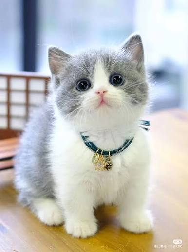

01DOCUMENT / TYPOGRAPHY
Word, Formatting Teks
Karya yang di buat untuk mempelajari pengolahan kata dan format teks menggunakan Microsoft Word maupun Google Docs.
KISHIN / CREATIVE WORKS ARCHIVE
Sebuah kumpulan karya,proyek,gambar yang saya buat.
KISHIN — CREATIVE WORKS
Sebuah Website yang menampilkan berbagai karya,proyek juga menjadi dokumentasi perjalanan dalam mempelajari pemograman,desain,dan berbagai bidang lainnya.
Explore Works01 — SELECTED WORKS
A selection of projects and creative works.
03 WORKS

01DOCUMENT / TYPOGRAPHY
Karya yang di buat untuk mempelajari pengolahan kata dan format teks menggunakan Microsoft Word maupun Google Docs.
 02
02
DATA / PRODUCTIVITY
Karya yang ku buat untuk mempelajari pengolahan data dan penggunaan Microsoft Excel Maupun Google Sheets.
 03
03
VISUAL ART / DESIGN
Gambar Nirmana yang ku buat untuk mempelajari seni rupa dan desain visual. Yang dapat menipu mata menimbulkan ilusi optik.
02 — ABOUT
KISHIN merupakan Website untuk mengumpulkan dan menampilkan berbagai karya, proyek, serta eksperimen kreatif yang saya buat.
Website ini juga menjadi dokumentasi perjalanan dalam mempelajari teknologi, pemrograman, desain, dan berbagai bidang kreatif lainnya.
03 — BACKGROUND
My educational journey and the experiences that have shaped my learning process.
Saya menempuh pendidikan di SMPIT AL USWAH SURABAYA. Di sini saya mempelajari berbagai bidang ilmu serta mengembangkan minat dalam teknologi, pemrograman, dan kreativitas.
Visit Official Website ↗Saya pernah menempuh pendidikan di SD Islam Maryam Surabaya. Di sini saya mempelajari berbagai bidang ilmu dasar serta mengembangkan minat dalam teknologi, pemrograman, dan kreativitas.